Olá, sou o Allison Cartazista! Transformo ofertas em verdadeiros chamarizes de clientes para açougues, supermercados, feiras e lojas em Franca/SP e cidades vizinhas com cartazes em papel cartão, pintura artística em vitrines e faixas resistentes.
Peças planejadas para cada espaço da sua loja: desde mini cartazes para gôndolas até grandes painéis de entrada e fachadas.
O autêntico visual do varejo brasileiro! Letras manuais expressivas e traços pretos grossos, feitos em diversos tamanhos sob medida para cada espaço do seu comércio:
Transforme o vidro da sua loja em um ímã de clientes! Arte manual no vidro para promoções, liquidações, Natal, Dia das Mães e inaugurações.
Ideais para fachadas, inaugurações, aniversários de loja e promoções de médio e longo prazo com ótimo caimento e legibilidade.
100% à prova de sol intenso e chuvas fortes! A melhor opção para feiras, hortifrútis, postos e divulgação externa de rua.
Fotos reais com marca d'água oficial branca. Clique em qualquer foto para ampliar em tela cheia.
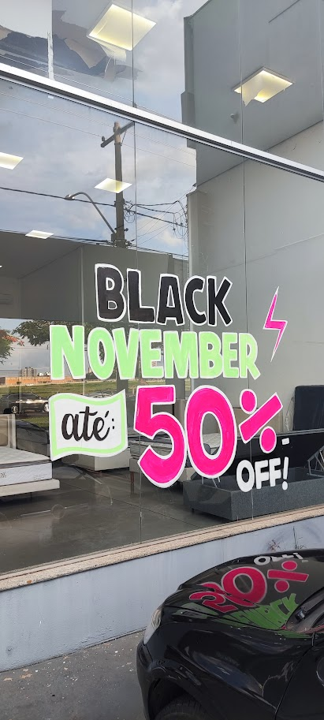
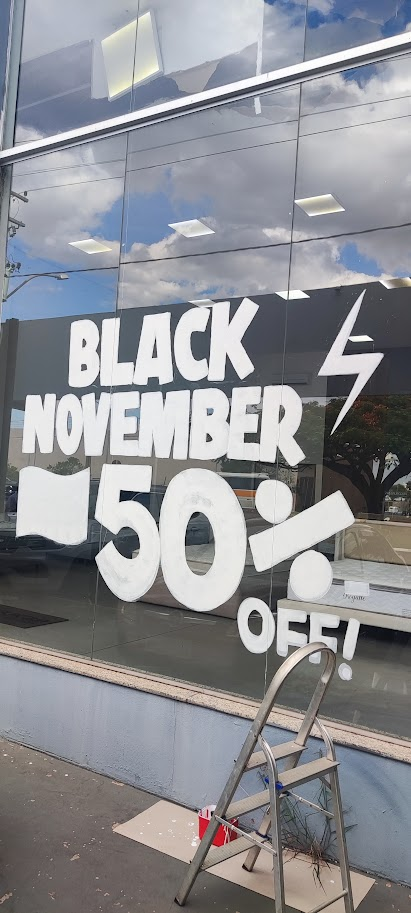
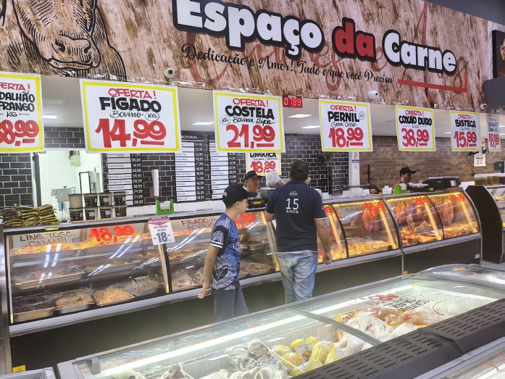
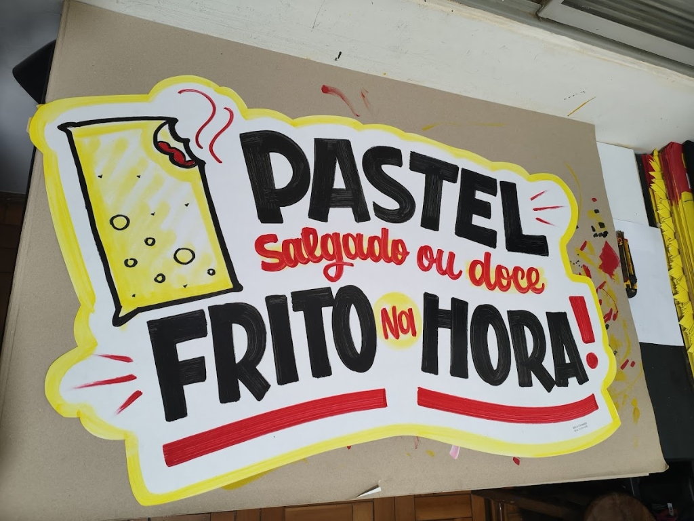
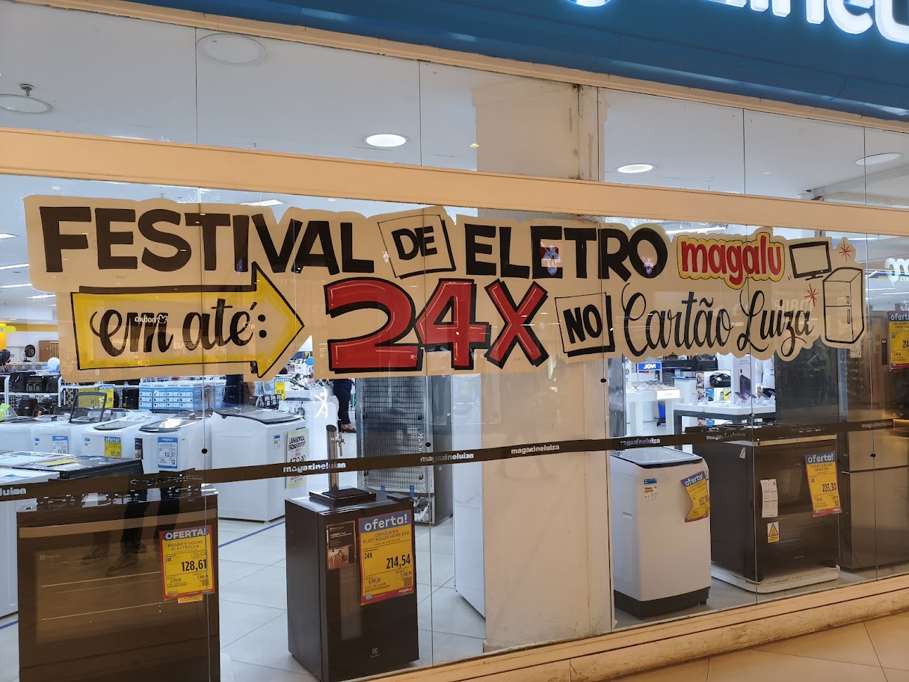
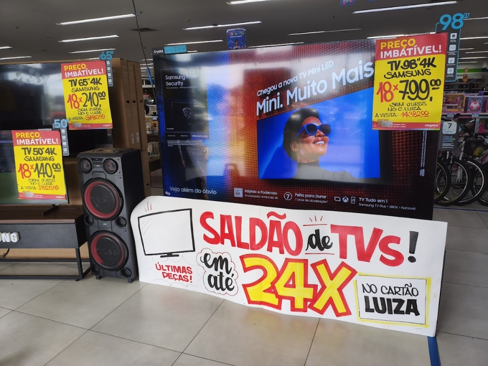
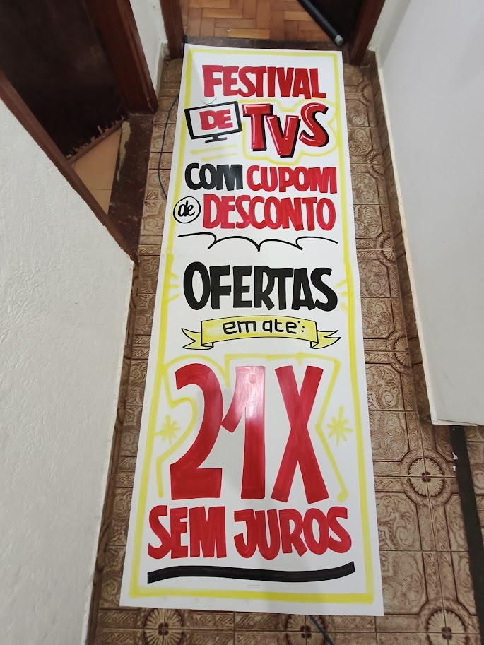
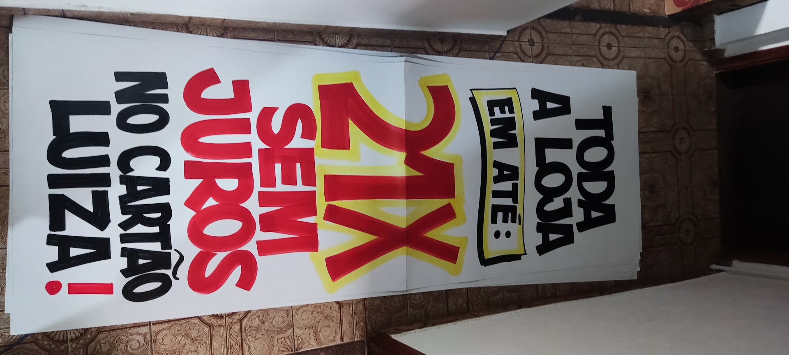
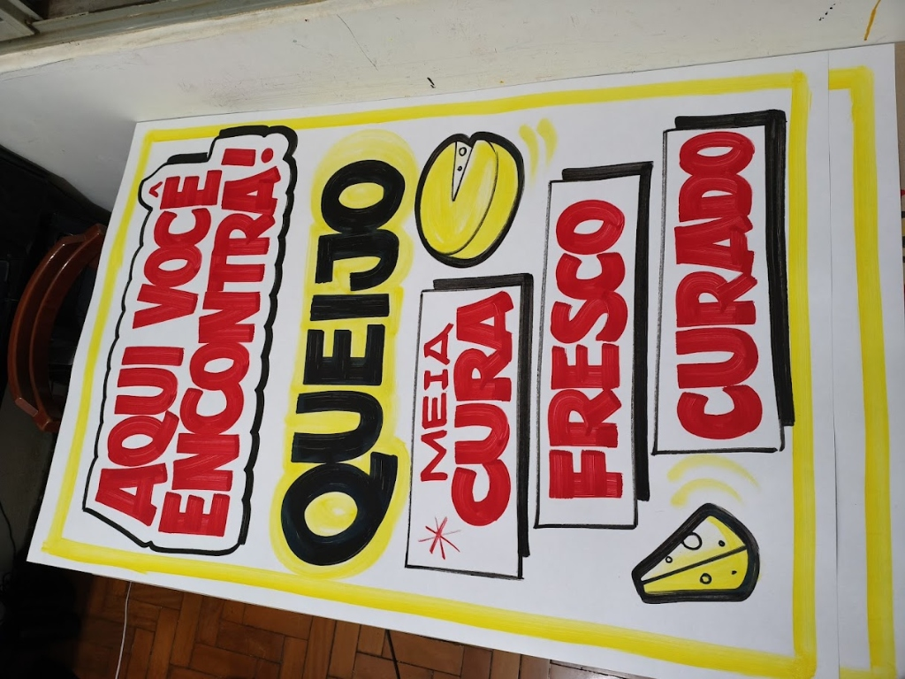
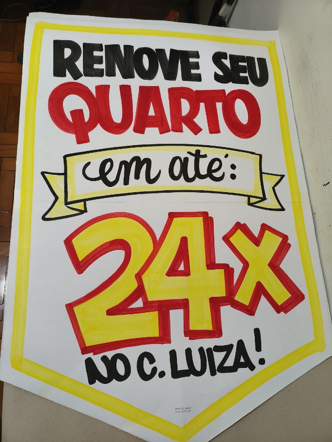
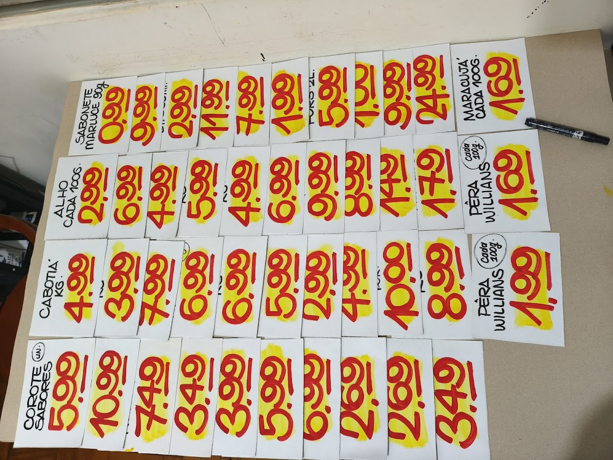
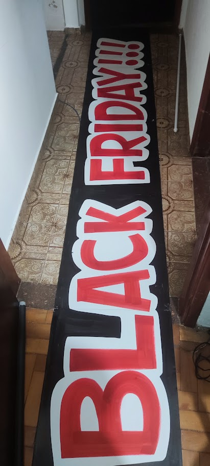
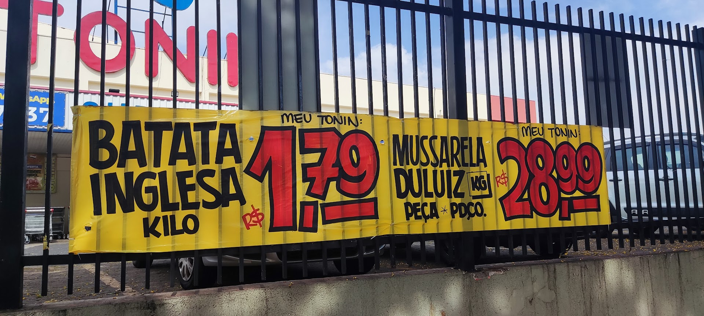
O cliente de Franca e região reage com muito mais força ao cartaz artesanal. Ele transmite sensação imediata de oportunidade, preço baixo de saldão e aquela proximidade que impressão gráfica comum não tem.
Falar com o AllisonCores puras e traços pretos grossos que capturam a visão do cliente no corredor na hora.
Associação automática com promoção quente, queima de estoque e oportunidade de compra.
Sua promoção começou hoje? Entrego e produzo com agilidade sem burocracia de gráfica.
Estilo cartoon, letras personalizadas e ilustrações temáticas sob medida para seu negócio.
Faço cartazes profissionalmente desde 2008! Já trabalhei diretamente em grandes redes de varejo e atendo diversos clientes e lojas em Franca e toda a região, incluindo grandes redes sob demanda.
Trabalho exclusivamente com material de altíssima qualidade que não desbota ao sol, utilizando tintas e pigmentos profissionais de alta resistência, traços manuais expressivos e acabamento impecável para valorizar o seu comércio e acelerar suas vendas.
Atendo Franca/SP e toda a região com pontualidade, compromisso e o padrão diferenciado de quem tem mais de 15 anos de estrada na arte comercial.
Tudo o que você precisa saber para contratar cartazes, vitrines e faixas em Franca e região.
Selecione a usabilidade ou serviço desejado e envie sua ideia diretamente no WhatsApp: